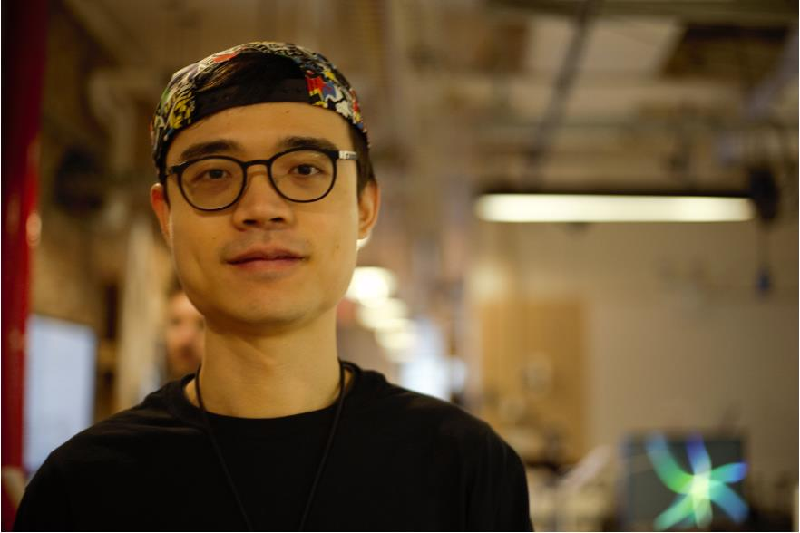

Yuguang (YG) Zhang is a New York-based creative technologist, new media artist and an incoming research resident of the Interactive Telecommunications Program (ITP) at New York University.
An ex-software product manager and artistic director, he took a leap of faith from his mid-career, in pursuit of a vision that embraces the co-existence of human and intelligent machines. Using networked devices and machine learning, he explores ways to create meaningful and humanistic experiences in the age of digital disruption.
His current practice, which incorporates interactive media, installation, and live performance, focuses on the reciprocal relationship between human and technology, the potential of AI in future storytelling, and the biases & ethical issues that come along. His works have been showcased at multiple music festivals & art venues in Asia, the NYC Media Lab Summit, New Inc., and Processing Foundation community conference in New York, NY, Cycling ‘74 Expo in North Adams, MA, and Fu:bar art festival at Zagreb, Croatia. He has been actively engaged in traditional West African music and dance performance since 2014, and he is a contributor to the friendly open source machine learning library ml5.js.
Full CV / Contact Me2019
NYCDH Digital Humanities Graduate Student Project Award, First Prize, New York, NY
2020
(Non-)Human, The SHIM/Masters Show, New York, NY. Jul 1 - Sep 29
Networked: CUT, Movement Research, New York, NY. Jun 30
Generative Photography, Re-Fest, CultureHub, New York, NY. Mar 12 - 14
3 AM, EdgeCut, New Inc., New York, NY. Feb 27
Machine Timing, RE•WORK Deep Learning Summit, San Francisco, CA. Jan 30 - 31
2019
3 AM, The Paper Box, Brooklyn, NY. Dec 6
Dissolved, /’fu̧:bar/ Glitch Art Festival 2019, Zagreb, Croatia. Oct 5 - 11
Machine Timing, NYC Media Lab, New York, NY. Sep 26
Cats, Cycling ’74 Expo, North Adams, MA, Apr 27
Matchman, Processing Community Day at The New School, New York, NY. Feb 9
2018
The Invisible Bird, ITP Winter Show, New York, NY. Dec 16 – 17
Haunted Museum, NYU GMTWP, New York, NY. Oct 27
Duniyama, Wula Drum and Dance Retreat, Pocono Valley, PA. Sep 15
2017 and earlier
Walk with Me, Guangzhou International Media Harbor, Guangzhou, China. Dec 31, 2017
Dununbe, The 4th Shenzhen Drummer Festival, Shenzhen, China. Aug 6, 2016
Sewa Concert Tour, Lai Kok Community Hall, Hong Kong. Dec 20, 2015
2020
Artist Interview: Generative Photography, Re-Fest 2020, CultureHub, New York, NY.
March 12 (link)
Artist Talk: Generative Photography, Arts at University of Wisconsin - Madison,
Madison, WI. Feb 24 (link)
Generative Photography: From Pinhole to GANs: an ongoing experiment to find emotional
impact for machine-generated visuals, Processing Community Day NYC, The New School,
New York, NY. Feb 8 (link)
GAN-Movie: An experiment on Using Machine Learning to Generate Short Film, Fordham
University Lincoln Center Campus, New York, NY. Feb 3
2020
Could AI be the
future of Art?, by Sarah Wilson, RE•WORK
2019
Foot Roller,
Adjacent Issue 6, ITP & IMA, Tisch School of the Arts, NYU